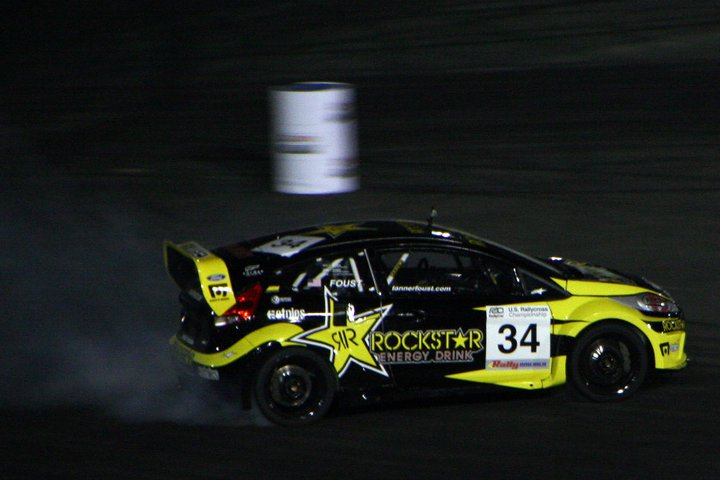
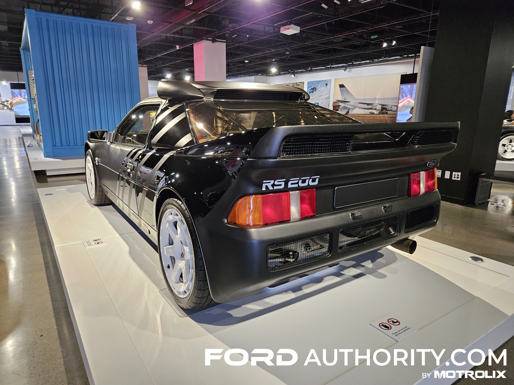
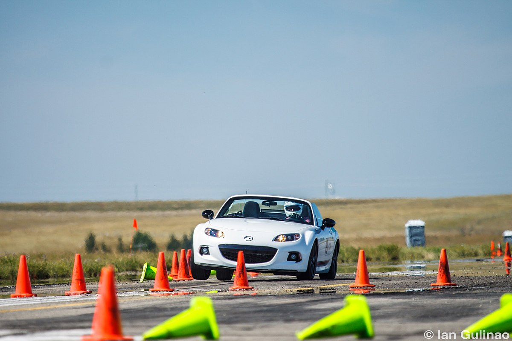
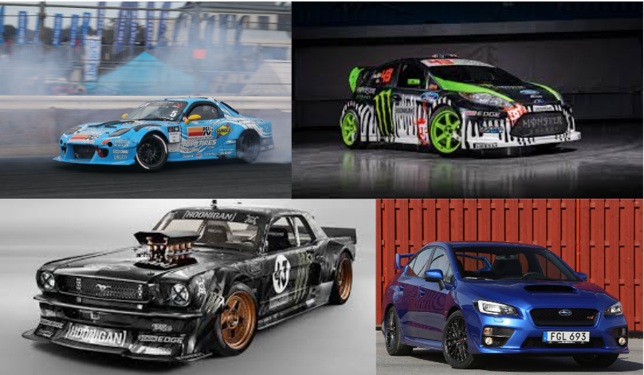
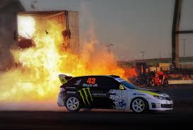

Définition du gymkhana automobile

Le gymkhana automobile est une discipline sportive qui consiste à
réaliser
un parcours chronométré composé de virages serrés, de slaloms, de
demi-
tours et d’obstacles techniques. Le but n’est pas seulement d’aller
vite,
mais pilotage bien plus que la vitesse pure.
Introduction à l’histoire

Le gymkhana automobile possède une histoire riche et intéressante,
marquée par son évolution depuis des formes anciennes de
compétitions
d’adresse jusqu’à la version moderne que l’on connaît aujourd’hui.
Son
développement à travers différents pays a contribué à en faire une
discipline unique. L’histoire complète de cette pratique sera
détaillée plus
loin.
Le déroulement d’une épreuve

Lors d’une compétition de gymkhana automobile, les participants
doivent effectuer un
parcours défini à l’avance, souvent tracé avec des cônes ou des
barrières. Le pilote
doit suivre un ordre précis de manœuvres : virages à 180° ou 360°,
stationnements
contrôlés, ou glissades calculées. Chaque erreur de trajectoire ou
contact avec un
cône entraîne une pénalité de temps, ce qui rend la concentration et
la mémoire du
tracé essentielles.
Les voitures utilisées

Dans le gymkhana, presque tout type de voiture peut être utilisé, à
condition qu’elle
soit bien contrôlable et suffisamment puissante pour effectuer des
manœuvres
rapides. Beaucoup de pilotes préfèrent des voitures légères, à
propulsion ou à
transmission intégrale, comme les Subaru WRX STI, Ford Fiesta ST, ou
Mazda RX-7. Ces voitures sont souvent modifiées pour améliorer la
maniabilité, le freinage et l’accélération.
Les compétences du pilote

Le gymkhana met principalement en avant la maîtrise du véhicule, la
coordination et
le timing. Le pilote doit savoir doser l’accélération, le freinage
et le contre-braquage
pour maintenir la trajectoire idéale sans perdre de temps. Cela
demande beaucoup
d’entraînement et une excellente connaissance de sa voiture. Plus
que dans
n’importe quelle autre discipline automobile, le pilote doit
anticiper chaque
mouvement avec précision.
Une discipline spectaculaire et formatrice

En plus d’être impressionnant à regarder, le gymkhana automobile est
une excellente
école de conduite. Il aide les conducteurs à mieux comprendre les
réactions de leur
voiture et à développer des réflexes de pilotage. C’est aussi un
sport accessible, car
il peut se pratiquer sur des parkings ou circuits fermés avec un
coût relativement
faible. Aujourd’hui, cette discipline continue de séduire les
amateurs de drift, de rallye
et de conduite de précision partout dans le monde.